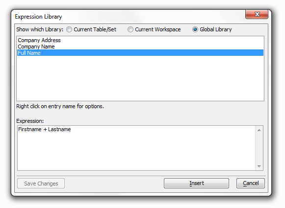

Expression Library
The Expression Library stores expressions that can be inserted into your script with only a couple of keystrokes.
Multiple Libraries
|
Adding an Entry
1. Create an Expression in the Expression Builder. If you don't enter any expression Alpha Anywhere will display an error message when you try to click add expression.
An Expression
2. Click the Add expression to Library button at the bottom right of the Expression Builder.
3. If you have entered an expression, but no part of the expression is currently highlighted, Alpha Anywhere will display this sub-menu after you click the button:

4. If you have entered an expression, and you have highlighted a portion of an expression, Alpha Anywhere will display this sub-menu after you click the button:
|
5. After selecting the appropriate option, Alpha Anywhere will ask you to describe the expression and select where you want to store it.
6. After clicking OK, Alpha Anywhere will display your expression in the Expression Library:

The Expression Library
7. If you are happy with the entry, simply click the Cancel button to save the entry and close the dialog.
|
Editing a Library Expression:
1. If you want to make any changes to an entry, open the Expression Library and edit the entry in the Expression: window.
Adding a Middlename field to an expression
2. Click the Save Changes button. This button only becomes active after you have altered an expression
Deleting or Editing and Entry:
1. In the top window of the Expression
Library dialog right click on the entry you want to edit or delete.
2. From the menu that open choose Delete Entry to delete the expression entry or Rename to rename it.
Sort the Expressions in a Library:
1. Click on any Expression in the top window of the Expression Library.
2. Right Click to open the library's menu. Click on Sort to open the sort menu.
3. Select Ascending to sort your library from A to Z.
Ascending Order
4. Select Descending to sort your library from Z to A.
Descending Order
5. Select Unsorted if you want to list the expression entries in the order they were created.
|
Inserting an Entry from the Library into an Expression
1. From the Expression Builder either double click Library Entry in the menu, or highlight Library Entry and click Insert, or press F9.
2. The Expression Library will open up. Select the entry that you want to insert and then either click the Insert button, or double click on the entry name.
See Also